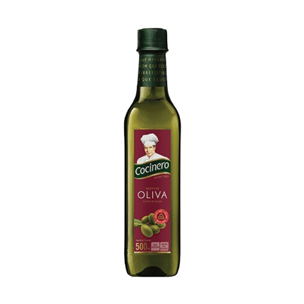

Aceite
-
Aceite de oliva
- 
Huevos
Maple blanco
Beneficios: depurativo, favorece la digestión y refuerza el sistema inmune
1/2 blanco
Beneficios: fortalece defensas y mejora la absorción de hierro
Maple color
Beneficios: antioxidante, ayuda a la piel y regula la presión arterial
1/2 color
Beneficios: favorece la hidratación, la digestión y la salud cardiovascular
Frutos secos
Beneficios: depurativo, favorece la digestión y refuerza el sistema inmune
Beneficios: fortalece defensas y mejora la absorción de hierro
Beneficios: antioxidante, ayuda a la piel y regula la presión arterial
Beneficios: favorece la hidratación, la digestión y la salud cardiovascular
Beneficios: favorece la hidratación, la digestión y la salud cardiovascular
Beneficios: favorece la hidratación, la digestión y la salud cardiovascular